A step-by-step guide to calibrating a finished radio: the frequency reference, the receive and transmit IQ balance, the output power and SWR readings, and the S-meter. It covers both the single-VFO and the dual-VFO versions of the RF board.
In short
Calibrate in this order: frequency → receive IQ → transmit IQ → power and SWR → S-meter. Each step relies on the ones before it.
Every calibration is on Menu → Calibration. Pressing Home (button 17) leaves the screen and saves the result.
A dual-VFO radio calibrates its transmit IQ by itself with no test equipment. A single-VFO radio needs a dummy load, an attenuator and a spectrum analyser or second receiver for that step.
The minimum kit is a 50 Ω dummy load (20 W), a shorting plug and an off-air frequency standard such as WWV or CHU. A wattmeter, a signal generator and, for single-VFO radios, a spectrum analyser make the results better or possible.
Appendixsummary, when to recalibrate, troubleshooting, panel map
0. Before you begin
What this guide assumes
The radio is fully built and its boards are tested: it boots to the home screen, receives, and transmits into a dummy load. The guide is written for the current Phoenix firmware. You do not need to know anything about the firmware itself. All calibration is done from the front panel.
The calibrations cover the 20 W PA. If your radio also has the 100 W amplifier, calibrate the 20 W PA first; the 100 W PA is not covered here.
Safety
Whenever a step transmits, there must be a 50 Ω load on the antenna connector that can take the power: a dummy load, or a wattmeter terminated in its load. The steps say which ones transmit.
Never connect a spectrum analyser, SDR or receiver straight to the antenna connector while transmitting. Take the signal from a sampler or through an attenuator rated for the power. Most small analysers are damaged above about +10 dBm (10 mW).
Calibration tones are continuous carriers. Keep transmissions short and let the PA rest between them.
Warm up
Switch the radio on at least 15 minutes before you start and leave it on for the whole session. The reference oscillator and the power amplifier both drift slightly as they warm up.
Finding your way around
The front panel has 18 numbered buttons (0 to 17) and four encoders. The calibration screens refer to the buttons by number, and so does this guide. The map below shows what the buttons do on the home screen; each calibration section has its own map.
Front panel, home screen. Buttons are numbered left to right, top to bottom.
To open a calibration:
Press 1 (Menu) to open the main menu.
Turn the Filter encoder until Calibration is highlighted, then press 0 (Select).
Turn the Filter encoder to the calibration you want and press 0 (Select).
The Calibration menu has five entries: S meter level, Frequency, Receive IQ, Transmit IQ and Power. Press 17 (Home) at any time to leave a menu.
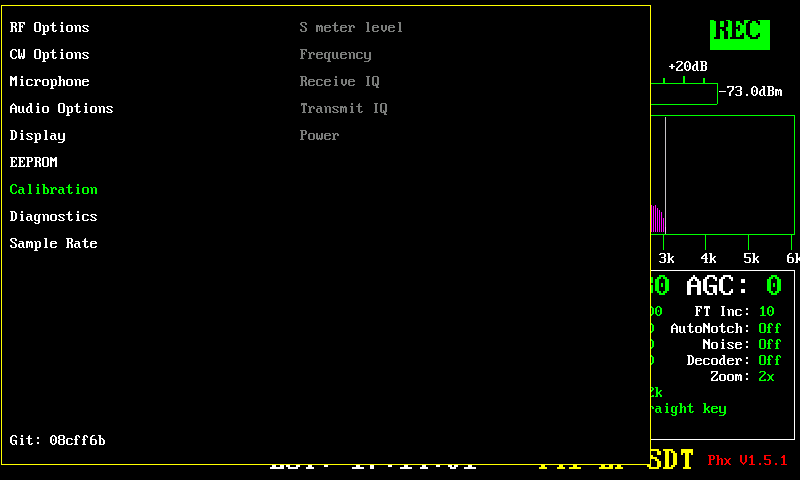
Main menu, turned to Calibration.
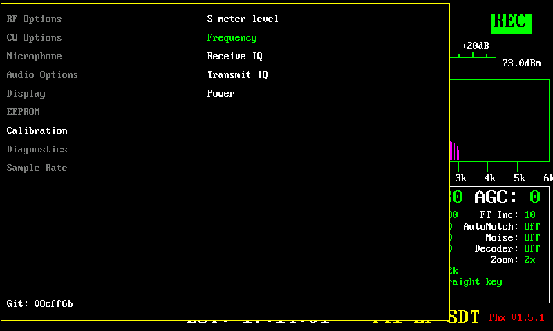
Calibration menu, turned to Frequency.
Single or dual VFO?
The RF board comes in two versions. The Single VFO board has one quadrature local oscillator, shared by receive and transmit. The Dual VFO board has separate receive and transmit oscillators, which lets the radio listen to its own transmitter. That makes a difference only to the transmit IQ calibration; every other step is the same.
The radio detects the board when it starts. To see which one you have, open Menu → Diagnostics → I2C BIT test and read the RF SI5351 line:
RF SI5351 address
Board
0x61
Dual VFO
0x60
Single VFO
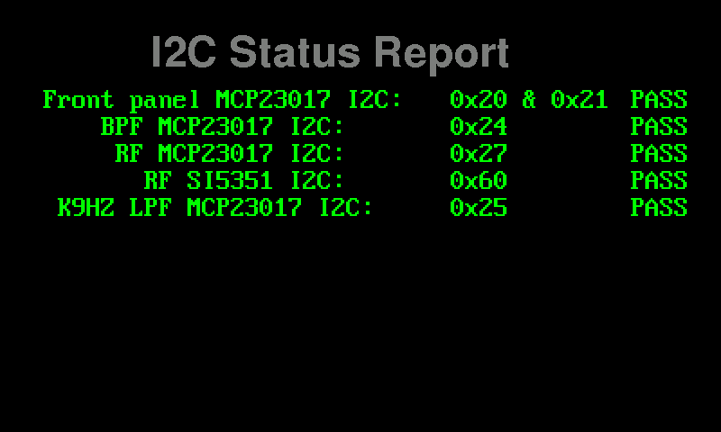
I2C status report of a single-VFO radio: the RF SI5351 is at 0x60. A dual-VFO radio shows 0x61. Press 17 to return to the home screen.
How results are saved
Each calibration screen saves its results to the radio's internal memory when you press 17 (Home) to leave it. The S-meter level is the exception: see section 5. The settings survive switching off. When you switch the radio off with its power switch, it also writes a backup copy to the SD card, if one is fitted.
You can repeat any calibration at any time. The new values replace the old ones.
Equipment checklist
Item
Used in
Needed?
Off-air frequency standard (WWV, WWVH, CHU), or a signal generator locked to a GPS or rubidium reference
Applies toBoth boardsTransmits noTime about 5 minutes
All of the radio's oscillators are derived from one 25 MHz crystal. Its frequency is never exactly 25 MHz, so the radio applies a correction factor, in parts per billion. This step sets that factor by tuning to a signal whose frequency is known exactly and nulling the error. The correction applies to both receive and transmit.
Do this first: the later calibrations place their test tones by frequency.
Equipment
Item
Notes
A carrier of exactly known frequency
An off-air time-and-frequency station: WWV or WWVH on 5, 10 or 15 MHz, or CHU on 3.330, 7.850 or 14.670 MHz. Or a signal generator locked to a GPS-disciplined or rubidium reference, at a moderate level (around −70 dBm). Use the highest frequency you can receive well: the same crystal error makes a larger frequency offset there, so it is easier to null.
An antenna
For an off-air standard.
Before you start
The tuning controls do not work on the calibration screen, so tune to the reference first, on the home screen.
Frequency calibration controls.
Control
What it does
Filter encoder
Changes the correction factor
15
Changes the step: 1, 10, 100, 1000 or 10000
7
Changes the demodulation; it must be SAM
17 Home
Saves the factor and leaves
Step by step
Connect the antenna (or the generator) and tune the radio to the reference frequency exactly, for example 10 000.000 kHz. Direct frequency entry (button 14) is the quickest way.
Press 7 (Demod.) until the demodulation is SAM (synchronous AM). Check that you can hear the carrier and that it is inside the filter passband.
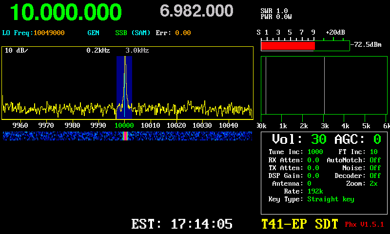
Tuned to 10.000 MHz in SAM.
Open Menu → Calibration → Frequency. The screen shows the Factor, the step (Incr.) and the Error, a measure of how far the received carrier is from where the radio expects it. The same reading appears as Err on the home screen in SAM.
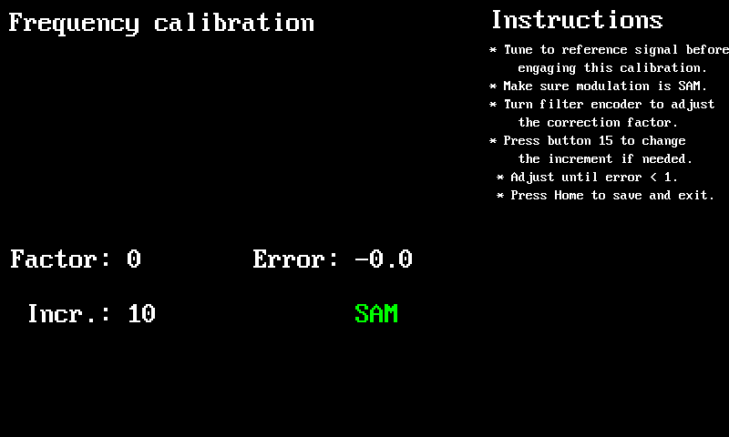
Frequency calibration screen, with the error nulled. The modulation is shown in green when it is SAM.
Turn the Filter encoder to bring the Error towards zero. Start with a large step (press 15 to change it) and make it smaller as you get close. The error reading settles a second or so after each change, so turn slowly.
Stop when the error stays between −1 and +1. Off-air signals wander with propagation; aim for the middle of the wander.
Press 17 (Home) to save and leave.
How do I know it worked?
Tune to a second standard in SAM, for example 15 MHz after calibrating on 10 MHz. The Err reading on the home screen should stay close to zero. If you have a frequency counter, a CW carrier into a dummy load should be within a few hertz of the dial on any band.
Single and dual VFO
The procedure is the same on both boards. The correction applies to every oscillator, so the transmitter is corrected too.
2. Receive IQ balance
Applies toBoth boardsTransmits no (internal test signal)Time about 3 minutes, automatic
The receiver mixes the incoming signal to I and Q channels. If those two channels are not exactly equal in amplitude and exactly 90° apart, a signal also appears as a faint mirror image on the other side of the display centre. This step finds the amplitude and phase corrections, band by band, that cancel that image.
The radio generates its own test signal and routes it internally into the receiver, so you need no equipment. The measure of success is Delta: how far the image is below the wanted signal, in dB. Higher is better; aim for more than 60 dB.
Equipment
None. Fit a dummy load (or leave the antenna disconnected) so that strong off-air signals do not disturb the measurement.
Receive IQ controls.
Control
What it does
16
Automatic calibration of every band
Volume encoder
Amplitude correction of the current band
Filter encoder
Phase correction of the current band
15
Changes the step: 0.01 or 0.001
2 / 5
Next or previous band
17 Home
Saves and leaves
Step by step
Open Menu → Calibration → Receive IQ. The screen shows the current band's Delta, Amp and Phase, a table of every band, and the spectrum with the test signal and its image.
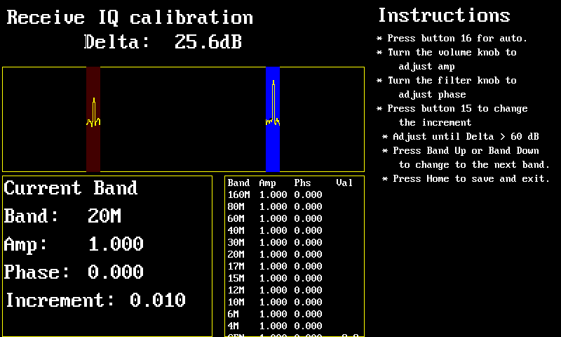
Receive IQ calibration, before calibrating: amplitude 1.000 and phase 0.000 on every band.
Press 16. The radio calibrates every band in turn, starting with 160 m: on each band it sweeps the amplitude and then the phase in coarse, medium and fine passes, and keeps the setting with the largest Delta. Leave it alone until it has finished the last band.
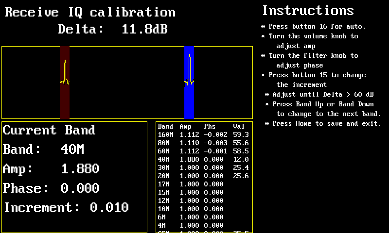
Automatic calibration in progress, on 40 m. The bands above it in the table are already done.
When it stops, check the table: the Val column is each band's Delta. The screen's target is 60 dB; if a band falls well short, select it and touch it up by hand (next step).
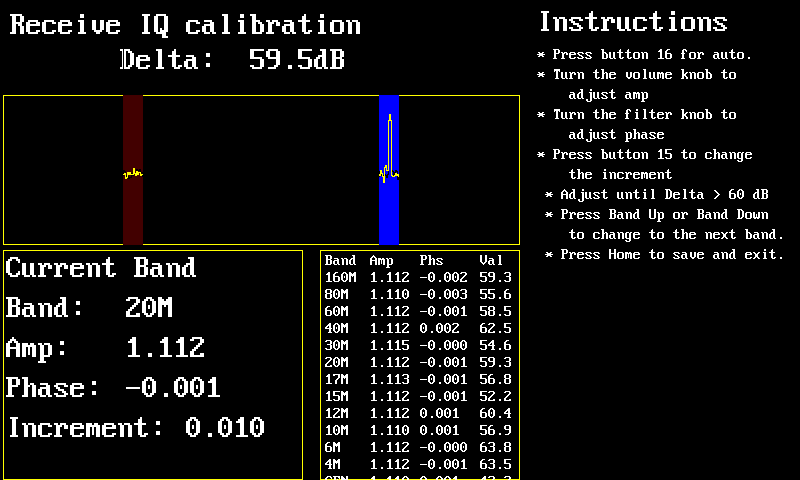
Finished. Each band has its own amplitude and phase correction.
Optional: to improve a band by hand, select it with 2 / 5, set the step to 0.001 with 15, and turn the Volume (amplitude) and Filter (phase) encoders alternately for the largest Delta.
Press 17 (Home) to save and leave.
Pressing 17 during the automatic run stops it. The bands it had finished keep their new values; the band it was working on goes back to its previous setting.
How do I know it worked?
On the home screen, tune a strong steady carrier (a broadcast station or a generator) about 20 kHz to one side of the display centre. Its mirror image on the other side should be gone, or at the noise floor.
Single and dual VFO
The procedure is the same on both boards.
3. Transmit IQ balance
Applies toDual VFO and Single VFO, done differentlyTransmits dual: no (internal loop) · single: yesTime dual: about 3 minutes, automatic · single: about 5 minutes per band
The transmitter has the same problem as the receiver in reverse: an amplitude or phase imbalance between I and Q puts a copy of your signal on the opposite sideband. This step finds the corrections, band by band, that suppress that unwanted sideband. The measure is the image rejection ratio (IRR): how far the unwanted sideband is below the wanted one. Aim for more than 60 dB on a dual-VFO radio. On a single-VFO radio the analyser's own dynamic range usually sets the limit, so aim for at least 50 dB.
The radio transmits an 800 Hz tone on the band's normal sideband. Do the receive IQ calibration first: on a dual-VFO radio the transmitter is measured through the receiver.
Dual VFO Automatic, no equipment
A dual-VFO radio can listen to its own transmitter. In this calibration the transmit signal is routed back into the receiver inside the radio, at low level, so nothing is sent to the antenna connector. The radio measures the IRR itself and shows it on screen.
Equipment
None. Leave a dummy load on the antenna connector as good practice.
Transmit IQ controls, dual VFO.
Control
What it does
16
Automatic calibration of every band
PTT
Transmits the test tone for a manual adjustment
Volume encoder
Amplitude correction
Filter encoder
Phase correction
Fine tune encoder
Transmit attenuation. Leave it at 31.5 dB.
15
Changes the step: 0.1, 0.01 or 0.001
2 / 5
Next or previous band
17 Home
Saves and leaves
Step by step
Open Menu → Calibration → Transmit IQ. The radio tunes to the middle of the current band.
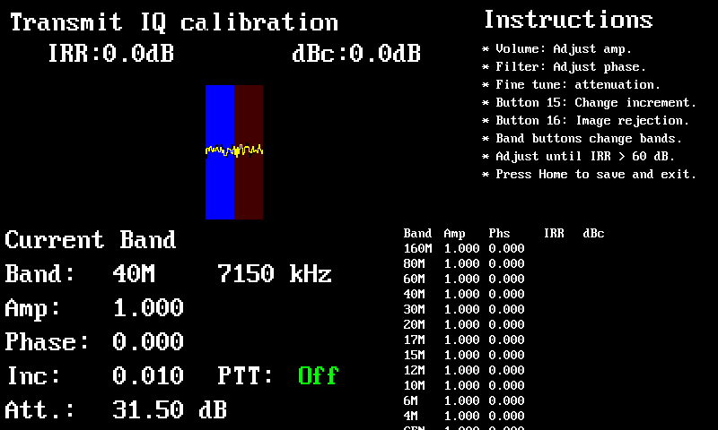
Transmit IQ calibration on a dual-VFO radio, not transmitting.
Optional: hold the PTT to see where you start. The spectrum shows the wanted tone and, to the other side of the centre, the unwanted sideband; IRR shows the difference and dBc the carrier leak. Release the PTT.
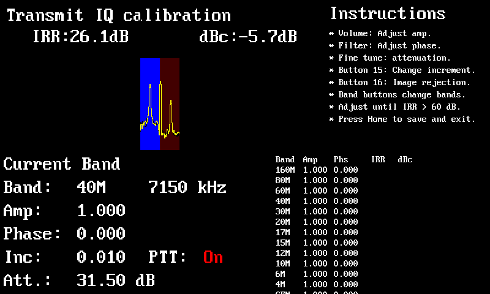
Transmitting the test tone into the internal loop. PTT shows On.
Select 160 m with 2 / 5, then press 16. The radio keys itself and calibrates every band in turn from the band on the screen upwards, then stops transmitting. You do not need to hold the PTT. (To redo only the higher bands, start from the first one you want.)
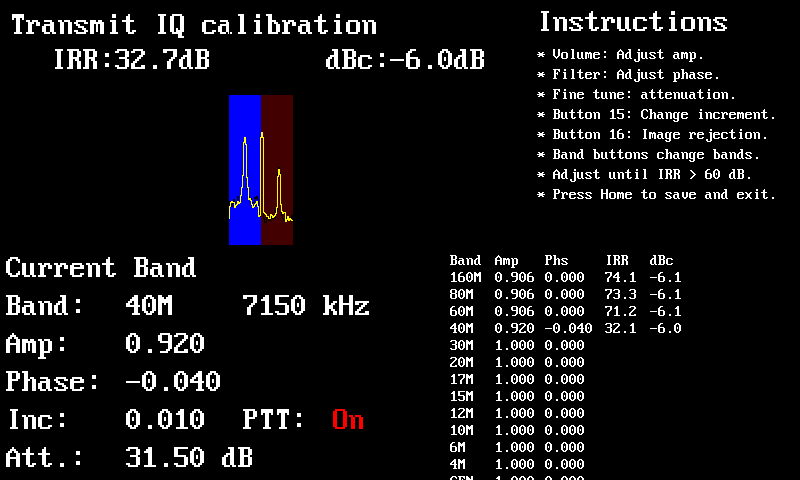
Automatic calibration in progress, on 40 m.
When it stops, check the table: each band has its own amplitude and phase, and the IRR it reached.
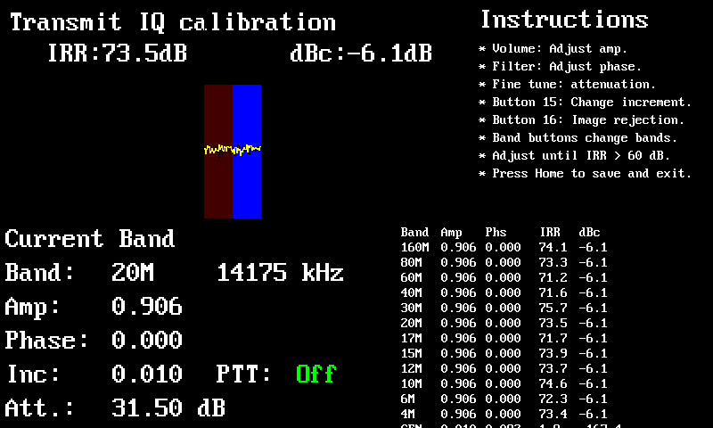
Finished.
Optional: to touch up a band by hand, select it with 2 / 5, hold the PTT, and turn the Volume and Filter encoders alternately for the highest IRR. The controls work while you transmit.
Press 17 (Home) to save and leave.
Pressing 17 during the automatic run stops it and stops transmitting. Bands already finished keep their new values; the band in progress goes back to its previous setting.
Single VFO Manual, with a spectrum analyser
A single-VFO radio cannot receive while it transmits, so it cannot measure its own image. It transmits the test tone through the power amplifier to the antenna connector, and you read the image on an external analyser and adjust by hand. The screen has no IRR reading on this board.
Equipment
Item
Notes
50 Ω dummy load
20 W continuous. The radio transmits a continuous tone for as long as you hold the PTT.
Sampler or attenuator
A dummy load with a sample port, or a 30–40 dB power attenuator in line, so that the analyser sees no more than about 0 dBm.
Spectrum analyser or second receiver
Covering HF, with a resolution bandwidth of 300 Hz or less so that it separates the tone, the carrier and the image, which are 800 Hz apart. A second SDR with a waterfall and a dB scale also works.
PTT
A microphone PTT switch or a footswitch.
Single-VFO bench setup, and what the analyser shows on an upper-sideband band. On lower-sideband bands (160, 80 and 40 m) the tone and the image swap sides. Minimise the image.
Transmit IQ controls, single VFO.
Control
What it does
PTT
Transmits the 800 Hz test tone
Volume encoder
Amplitude correction
Filter encoder
Phase correction
Fine tune encoder
Transmit attenuation, 0.5 dB a step; starts at 31.5 dB (lowest power)
15
Changes the step: 0.1, 0.01 or 0.001
2 / 5
Next or previous band
17 Home
Saves and leaves
Step by step
Connect the radio to the dummy load, the sampler or attenuator, and the analyser as above.
Open Menu → Calibration → Transmit IQ. The radio tunes to the middle of the current band and shows the frequency. The attenuation (Att.) starts at 31.5 dB, the lowest output power.
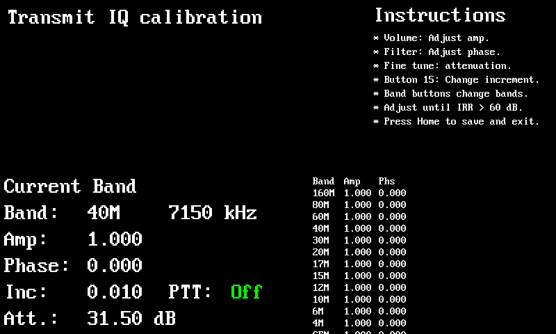
Transmit IQ calibration on a single-VFO radio: no IRR reading and no spectrum. The band table shows every band's settings.
Set the analyser to the frequency shown, with a span of about 5 kHz.
Hold the PTT. Find the tone 800 Hz from the dial frequency. If it is too weak to see the image clearly, release the PTT, turn the Fine tune encoder anticlockwise a few steps to reduce the attenuation, and try again. A few hundred milliwatts is plenty.
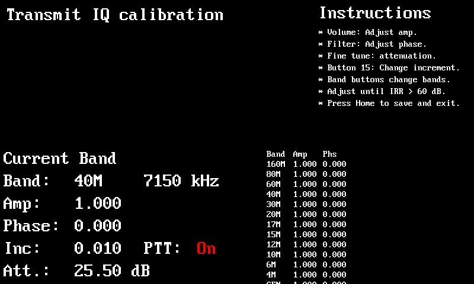
Transmitting at 25.5 dB attenuation. PTT shows On.
While holding the PTT, turn the Volume encoder (amplitude) to make the image as small as you can, then the Filter encoder (phase). Go back and forth between them; each one shifts the best setting of the other. Make the step smaller with 15 as the image drops. The controls work while you transmit.
Release the PTT whenever you need to rest the PA; the settings stay.
Press 2 (Band +) and repeat steps 3 to 6 on every band you use. Retune the analyser to each band's frequency.
Press 17 (Home) to save and leave.
Radios built with direct-coupled transmit. Some builds use a direct-coupled transmit path, which can also null the transmitted carrier. On those radios the Fine tune and Centre tune encoders set the I and Q DC offsets on this screen (instead of the attenuation), and a dual-VFO radio nulls the carrier automatically with button 14. On a single-VFO radio, minimise the carrier on the analyser with the two offsets by hand. The attenuation then stays at 31.5 dB.
How do I know it worked?
Transmit a single tone in SSB into a dummy load and look at it on an analyser or a second receiver: the opposite sideband should be at least 50 to 60 dB down. On a dual-VFO radio the IRR column in the table gives the same answer for every band.
4. Power and SWR
Applies toBoth boards, 20 W PATransmits yes, up to full powerTime 12 to 20 minutes, automatic
This step makes two things accurate on every band from 160 to 6 m:
The output power. The radio measures how its output varies with drive, so that the power you set in CW and SSB is the power you get.
The power and SWR readings. It calibrates the SWR bridge with three known terminations: a 50 Ω load, an open (nothing fitted) and a short.
The radio does the work itself. You fit the load, the open and the short when it asks, and, if you have a wattmeter, type in its reading twice per band. Do this after the transmit IQ calibration, because the SSB part of the measurement includes any unwanted sideband.
Which level?
The automatic calibration has levels that differ in how much equipment you need and how accurate the power display is afterwards. The SWR reading is almost as good at every level.
Level
Equipment
Wattmeter readings
Power display accuracy
1
50 Ω dummy load, short
none
about ±1.5 dB
2 (recommended)
Wattmeter with its 50 Ω load, short
2 per band, 22 in all
about ±0.3 dB, worst ±0.8 dB
Use level 2 if you have a wattmeter. You can calibrate at level 1 now and repeat at level 2 later; the new results replace the old ones. (Level 3 takes eight readings per band and is intended for development work.)
Equipment
Item
Notes
50 Ω load
Level 1: a dummy load. Level 2: the wattmeter, connected with as short a lead as possible, with its own load on its output. Either way it must take 20 W continuously: the radio transmits for about 20 s at a time on each band.
Short
A low-inductance shorting plug that fits the antenna connector directly.
Open
Nothing on the connector.
Before you start
Know your L44 turns. The calibration asks for the number of turns per core on the SWR bridge's coupler, L44, from your build. The examples below use 20.
Fit everything directly on the antenna connector: no cables or adapters. This matters most for the short. A cable between the connector and the short makes every SWR reading high, and the calibration cannot correct for it.
Use the antenna connector you normally operate from.
Automatic power and SWR controls.
Control
What it does
0 Select
Start; confirm that a standard is fitted; enter a wattmeter reading; accept the results
3
Abort at any time. The radio stops transmitting at once and nothing is stored.
Volume encoder
Choose the level (setup screen only)
Filter encoder
Set the L44 turns (setup screen); dial in a wattmeter reading
12
Skip the load stage (level 1 only, to recalibrate the SWR bridge alone)
14
Switch the wattmeter entry between W and dBm; on the review screen, repeat the bands that failed
15
Change the wattmeter entry's step: 1, 0.1 or 0.01
17 Home
Leave
Step by step (level 2)
Open Menu → Calibration → Power. The manual power calibration screen appears. Check that it shows PA 20W, then press 1 to start the automatic calibration.
Power calibration, where the automatic calibration starts.
On the setup screen, turn the Volume encoder until the level reads 2, and the Filter encoder until L44 turns is right for your radio. The radio remembers the turns. Press 0.
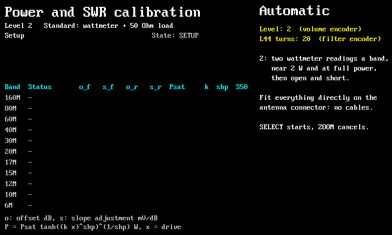
Setup: level 2, 20 turns.
The radio asks for the wattmeter + 50 Ohm load. Connect them and press 0.
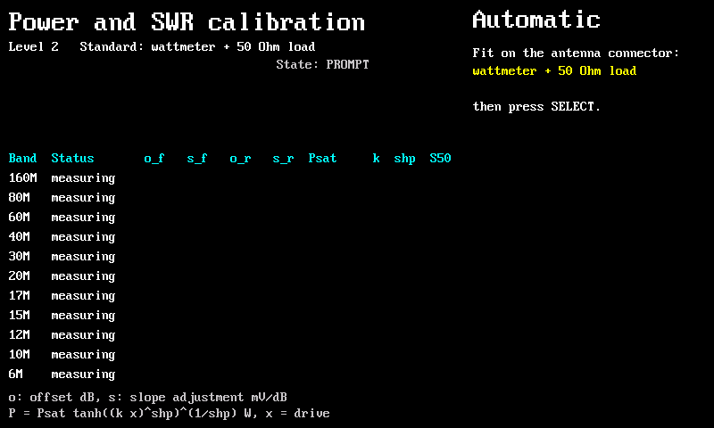
Prompt for the load.
Starting on 160 m, the radio keys a CW carrier and steps the drive down from full power in 12 steps. KEYED in red means it is transmitting. Leave the connector alone.
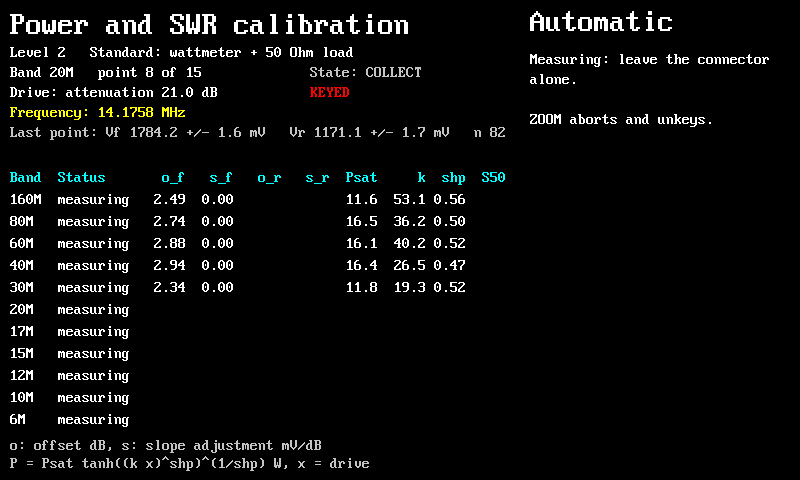
Measuring into the load, on 20 m.
After the sweep, the radio keys near 2 W and asks for the wattmeter reading. Turn the Filter encoder until Measured matches the meter, then press 0. The entry starts at the power the radio expects, so it usually needs only a small change. Use 14 if your meter reads in dBm and 15 to change the step.
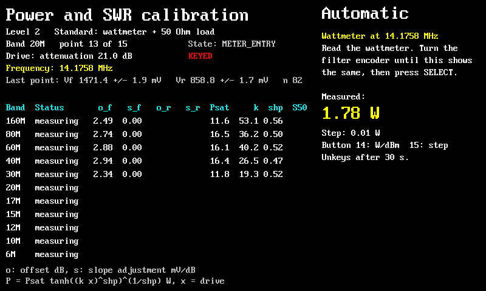
First reading: 1.78 W on 20 m.
If you do not press 0 within 30 seconds, the radio stops transmitting to protect the PA. Press 0 to key it again and finish the entry.
The radio keys at full power and asks for the second reading. Dial it in and press 0.
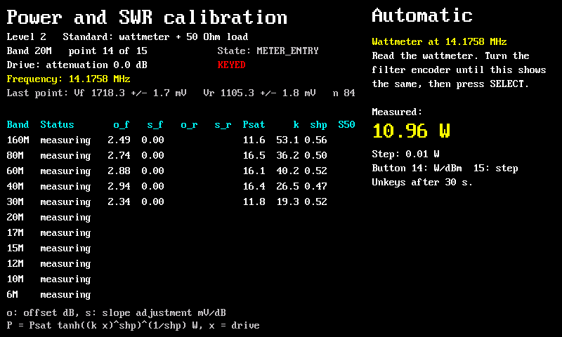
Second reading: 10.96 W on 20 m.
The radio sends a short SSB tone and moves to the next band. Repeat the two readings on every band: 160, 80, 60, 40, 30, 20, 17, 15, 12, 10 and 6 m.
After 6 m the radio asks for the open. Remove the wattmeter, leave the connector bare and press 0. The radio measures every band again with short, low-power bursts, with pauses so the PA stays cool.
Prompt for the open.
The radio asks for the short. Screw the shorting plug directly onto the connector and press 0. It measures every band again.
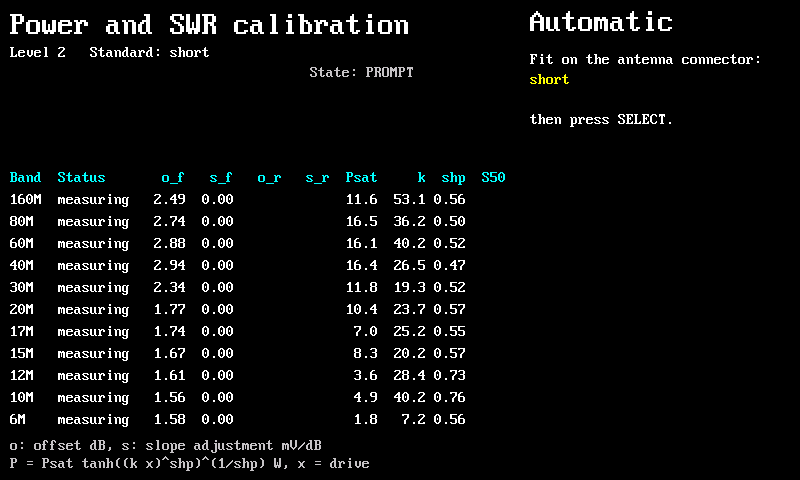
Prompt for the short.
The review screen shows the result for every band. Green pass means the band is ready to store. pass(open) or pass(shrt) means the band passed but its SWR calibration came from only one of the two standards, which is slightly less accurate. Some PAs oscillate into a short; the radio detects this and leaves those readings out. S50 is the SWR the bridge read on the load; it should be close to 1.
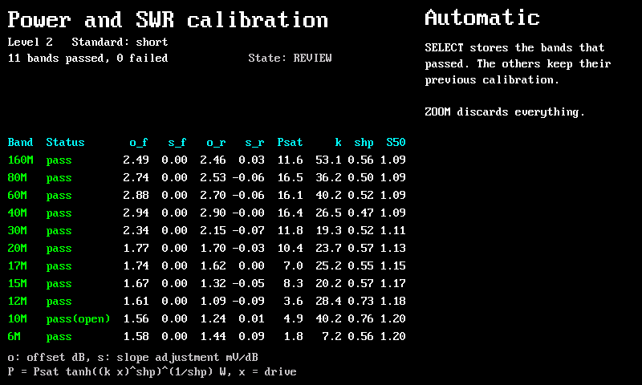
Review: every band passed; 10 m was calibrated from the open alone.
Press 0 to store the bands that passed (bands that failed keep their previous calibration), then 17 to leave. The radio returns to your band, frequency and mode.
Level 1: no wattmeter
The same as level 2, except: choose level 1 on the setup screen; the radio asks for a plain 50 Ω load; and it never asks for meter readings. A level 1 session takes about 12 minutes. Without a wattmeter the radio uses typical values for the absolute power, so the power display is good to about ±1.5 dB.
At level 1 you can press 12 at the load prompt instead of 0 to skip the load and recalibrate only the SWR bridge, keeping the existing power calibration.
If a band fails
On the review screen, press 14 to repeat the session for the failed bands only. The radio asks for the load, the open and the short again but measures only those bands.
Reason on the review screen
What to check
50 Ohm load missing
The load was not fitted, or came loose, during the load stage.
load SWR too high
A poor dummy load, or a cable or adapter between it and the connector. The band fails above an S50 of 1.3 (1.5 above 20 MHz).
level 2 offset
The 2 W reading was more than 3 dB (4 dB above 20 MHz) from what the L44 turns predict. Check the meter, its range and the L44 turns.
open and short abandoned
The PA oscillated into both the open and the short. Check the PA, then retry.
too few readings
The SWR bridge readings did not arrive. Check the LPF board and its I²C connection.
PA curve fit
A reading was wrong. Retry.
any other reason
Check that the standards are fitted directly on the connector and retry. If a band still fails, calibrate its power by hand (below).
Manual power calibration (fallback)
Use this for a band that will not pass the automatic calibration. It calibrates the output power of one band at a time from three CW readings and one SSB reading. It does not calibrate the SWR bridge.
Equipment
A wattmeter with its 50 Ω load, rated for 20 W, and a PTT switch.
Manual power calibration controls.
Control
What it does
PTT
Transmits (CW carrier for steps 1–3, SSB tone for step 4)
Volume encoder
Transmit attenuation, 0.5 dB a step
Filter encoder
The measured power you enter
0 Select
Record the point
12
Go on to the SSB step (step 4)
3
Start again from step 1
14 / 15
W or dBm / entry step
2 / 5
Next or previous band
17 Home
Saves and leaves
All buttons are ignored while you transmit, so the rhythm of each step is: key, read the meter, unkey, dial in the reading, press 0.
Open Menu → Calibration → Power. Check PA 20W, and select the band with 2 / 5.
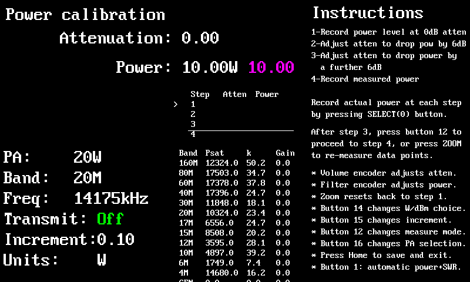
Manual power calibration, step 1 on 20 m.
Step 1, full power: with 0 dB attenuation, key the PTT, read the wattmeter and unkey. Turn the Filter encoder to the reading and press 0.
Step 2: turn the Volume encoder to raise the attenuation until the power drops by about 6 dB (to about a quarter). Twelve steps of 0.5 dB is a good start. Key, read, unkey, dial in the reading and press 0.
Step 3: raise the attenuation for a further 6 dB drop and record the reading the same way. The radio fits its power curve and shows it in the table.
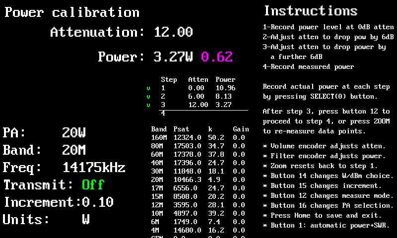
After step 3: three points recorded and the curve fitted.
Step 4, SSB: press 12. Key the PTT; the radio sends an 800 Hz tone at its SSB drive. Read the meter, unkey, dial in the reading and press 0.
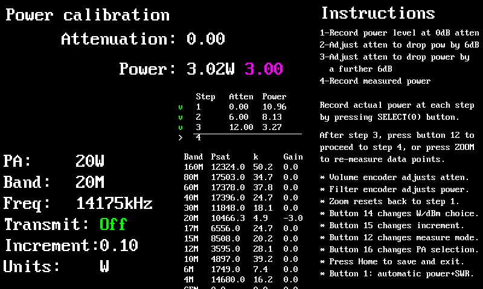
Step 4, the SSB tone.
Repeat for any other band, then press 17 (Home) to save and leave.
How do I know it worked?
Set 5 W in CW and key into the wattmeter on a few bands: the meter should agree with the setting to within the accuracy of your level. Then put the shorting plug, the open and the dummy load on in turn and key briefly at low power: the SWR display should read very high, very high and close to 1.0.
Single and dual VFO
The procedure is the same on both boards.
5. S-meter level
Applies toBoth boardsTransmits noTime 2 minutes per band
The radio shows received signal strength in dBm next to the S-meter. This step adds a correction, per band, so that the reading matches a known signal. It is optional: the other calibrations do not depend on it. The setting is in decibels, from −20 to +50 in 0.5 dB steps.
Equipment
Item
Notes
Signal generator
An HF generator whose output level you trust, or a generator followed by a calibrated step attenuator. Use a level well above the noise and below overload: −73 dBm (S9, 50 µV into 50 Ω) is a good choice. Allow for the loss of the cable.
S-meter level controls.
Control
What it does
Filter encoder
Changes the offset of the current band
0 Select
Closes the setting
Connect the generator to the antenna connector and set it to −73 dBm on a frequency in the band, for example 14.100 MHz.
On the home screen, select the band and tune so that the carrier is in the receive passband. Note the dBm reading next to the S-meter.
Open Menu → Calibration → S meter level. A box with the current band's offset appears over the home screen, and the reading stays visible.
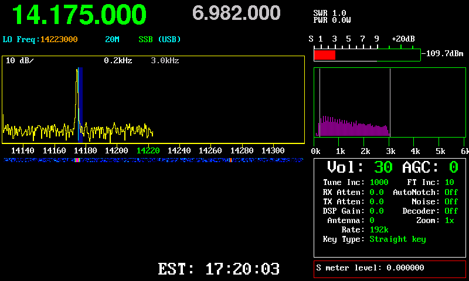
S meter level: the offset box over the home screen.
Turn the Filter encoder until the dBm reading equals the generator level. Then press 0.
Change band on the home screen and repeat for every band you use.
Save the result: this setting is not saved by pressing Home. Open Menu → EEPROM → Save data to storage, or switch the radio off with its power switch. Leaving any other calibration screen with 17 also saves it.
Work on the PA, the LPF board or the SWR bridge (including L44)
4
Changing the antenna connector you calibrate on
4 (SWR only: level 1 with button 12)
Erasing the radio's settings
Everything
Troubleshooting
Symptom
Check
Frequency: the error never settles
The demodulation must be SAM, and the carrier must be inside the passband before you open the screen. A fading off-air signal makes the error wander; try another frequency or a generator.
Receive IQ: Delta stays low on every band
A strong signal on the antenna connector; fit a dummy load. Check the receive mixer and the codec wiring.
Transmit IQ (dual): IRR stays low
Do the receive IQ calibration first.
Transmit IQ (single): no tone on the analyser
Hold the PTT, check that the analyser is tuned to the frequency on the screen, and reduce the attenuation with the Fine tune encoder.
Transmit IQ (single): the image will not go below the analyser's noise
Reduce the attenuation for a stronger tone, or narrow the analyser's resolution bandwidth. You have reached the analyser's limit, which is good enough.
Power: the automatic calibration will not start
It needs the 20 W PA selected (PA 20W on the power screen).
A setting was lost after switching off
Leave calibration screens with 17 (Home); save the S-meter level from the EEPROM menu.
About the screenshots
The screen images come from the Phoenix radio simulator, which runs the radio's own firmware on a PC. The automatic calibrations in it run against simulated test signals, so the numbers on your radio will differ.